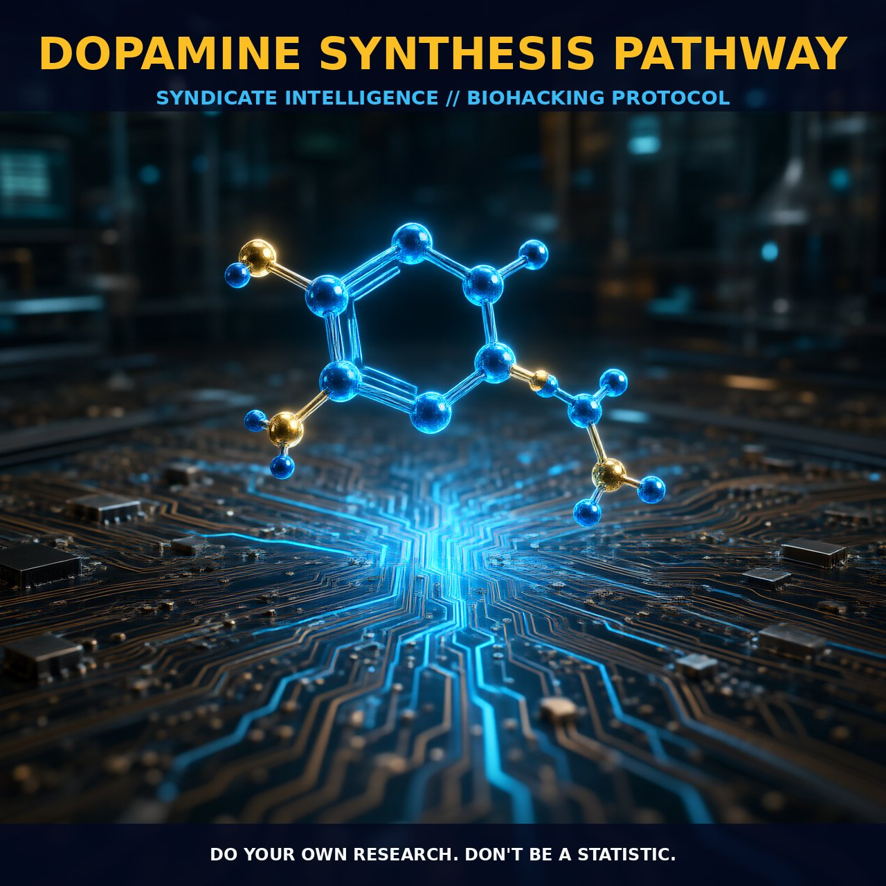

Dopamine Synthesis Pathway: Optimizing Neurotransmitter Levels

1. The Mechanism of Dopamine Synthesis
Dopamine, a catecholamine neurotransmitter, is synthesized from the amino acid tyrosine through a series of enzymatic reactions. The process begins with the hydroxylation of tyrosine to form DOPA (3,4-dihydroxyphenylalanine) by the enzyme tyrosine hydroxylase (TH). This enzyme is the rate-limiting step in dopamine synthesis, meaning that its activity is crucial for the production of dopamine.
The DOPA is then converted to dopamine by the action of DOPA decarboxylase (DDC) or aromatic L-amino acid decarboxylase (AADC). Dopamine can subsequently be further metabolized to form noradrenaline and adrenaline through the actions of dopamine β-hydroxylase (DBH) and phenylethanolamine N-methyltransferase (PNMT), respectively.
The synthesis of dopamine is regulated by multiple factors, including genetic variations in the CYP450 system, which can influence the activity of enzymes involved in dopamine synthesis and metabolism. Tyrosine hydroxylase is particularly sensitive to its regulatory factors, such as TH phosphorylation and calcium-dependent protein kinases. TH is also modulated by other molecules like cyclic AMP (cAMP), which can activate PKA (protein kinase A) to phosphorylate and activate TH. This phosphorylation event increases the catalytic activity of TH, thereby enhancing dopamine synthesis.
In addition, TH activity is regulated by TH cofactors such as tetrahydrobiopterin (BH4), which is essential for the hydroxylation of tyrosine to DOPA.
2. Biological Leverage of Dopamine
Dopamine exerts its effects through a complex network of receptors and pathways, with five distinct subtypes of dopamine receptors (D1 through D5) distributed throughout the brain. These receptors are G protein-coupled receptors that can activate multiple downstream signaling pathways upon dopamine binding.
D1 and D5 receptors are coupled to Gs proteins, leading to the activation of adenylate cyclase, which increases intracellular cAMP levels. This cAMP then activates protein kinase A (PKA), leading to phosphorylation of various target proteins, including ion channels and transporters. The D2, D3, and D4 receptors, on the other hand, are coupled to Gi/o proteins, which inhibit adenylate cyclase and decrease cAMP levels. This leads to downstream effects on ion channels and other signaling molecules, modulating neural activity.
Dopamine also plays a crucial role in various behavioral and cognitive processes, including reward, motivation, and executive functions. Dopamine modulation in the prefrontal cortex is particularly important for working memory and cognitive flexibility. D1 receptors in this region support sustained neural activity, while D2 receptors are involved in the gating of information flow. The balance between these two receptor types is critical for optimal cognitive performance.
Dysregulation of dopamine signaling can lead to a range of neuropsychiatric conditions, such as Parkinson's disease, schizophrenia, ADHD, and restless legs syndrome. In Parkinson's disease, the loss of dopaminergic neurons in the substantia nigra leads to a decrease in dopamine levels in the striatum, affecting motor control. In contrast, excessive dopamine in the mesolimbic pathway is often implicated in schizophrenia.
3. Protocol Implementation
To optimize dopamine levels through dietary and supplement means, consider focusing on the precursors and cofactors of dopamine synthesis. Phenylalanine and tyrosine are the immediate precursors of dopamine, and supplementation with these amino acids can support dopamine production. However, it is important to note that the dose and timing of these supplements can significantly impact their efficacy.
Low-to-moderate amounts of phenylalanine and tyrosine are recommended, as high levels can lead to excessive dopamine production and potential dysregulation. Additionally, cofactors like BH4, vitamin B6, and iron, which are essential for the enzymatic reactions in dopamine synthesis, should be considered. BH4, in particular, is a critical cofactor for tyrosine hydroxylase and its deficiency can lead to reduced dopamine synthesis.
Timing is also a critical factor. Taking phenylalanine and tyrosine in the morning or early afternoon may be beneficial, as these amino acids can support cognitive function during the day. Evening supplementation might be less desirable to avoid potential interference with sleep. Moreover, stacking tyrosine with other compounds like L-theanine or caffeine can enhance cognitive effects by modulating neurotransmitter activity. For example, L-theanine can increase GABA activity, which can help maintain a balanced state of arousal and reduce anxiety, while caffeine can boost dopamine levels and enhance alertness.
Prostar Life Hack
To optimize dopamine levels, supplement with low-to-moderate amounts of tyrosine and phenylalanine in the morning or early afternoon. Consider adding BH4, vitamin B6, and iron for better enzymatic efficiency. Stack with L-theanine for balanced arousal and reduce anxiety.
[ AUTHOR: LEAD TECHNICAL RESEARCHER ]